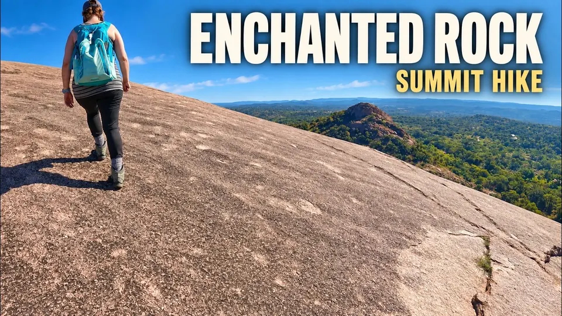

St. John’s in Bomarton
Bomarton, Texas

The places
22 films and shorts from places named in the Texas titles.
The map marks the places that can be located from those titles; it is not a record of one continuous drive.
The map loads when you scroll to it. The stops are listed below.
Map data © OpenStreetMap
Step through the stops
Bomarton, Texas
Texas
East Texas
Texas
Texas
Texas
East Texas
Texas
Cranfills Gap, Texas
Texas
Texas
Langtry, Texas
Texas
Beaumont, Texas
Texas
Along the way
El Paso, Texas, United States
Mexican
Open
Several locations in El Paso.
El Paso, Texas, United States
Listed as: Ambar
Mexican / American
106 West Mills Avenue, El Paso, TX 79901
Open
The films